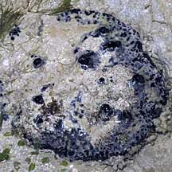
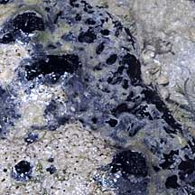
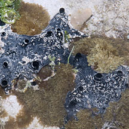
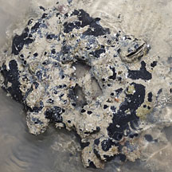
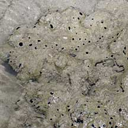
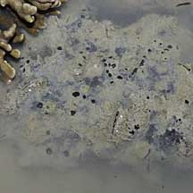

|
|
| sponges text index | photo index |
| Phylum Porifera |
| Black
bath sponge Family Spongiidae updated Oct 2016 Where seen? A black sponge that is sometimes seen on some of our shores, often covered in sediments. These sponges are often seen on silty reef flats. Features: Generally a globular dome-shaped or loaf-shaped sponge up to 15cm, some with lumps or knobs. Some have tiny holes, others with cones topped with large circular holes. Texture finely granular, some smooth and shiny especially underwater. Many are often covered in sediment. Colours a uniform deep black. Sponges with these features which are commonly encountered include Spongia ceylonensis, Spongia sp. 'Vulsella' and Hippospongia 'black massive'. They are difficult to tell apart in the field. The Black frogfish (Family Antennariidae) resembles this sponge! Sponging clams: Some Spongia species are inhabited by Sponge finger oysters (Vulsella sp.), a kind of clam that lives only in sponges. These are completely and deeply embedded in the sponge, with only a slit on the surface of the sponge where the bivalve's shell opening is. Members of the Family Spongiidaes have a skeleton made up of tough, elastic fibres made of a protein called spongin. They lack the framework of spicules (tiny, hard, sharp spikes) throughout their body. Sometimes confused with the Black prickly sponge (Echinodictyum conulosum) which has a very prickly surface. Human uses: Today, the sponges you use at home are synthetic and not made from living sponges. In the past, natural sponges were used for padding and packing, to paint with and to bathe with. Natural sponges are still used today as luxury bath items. Commercial bath sponges come mainly from Spongia officinalis that is found in the Mediterranean Sea. Other species of the Family Spongiidae may also be used for this purpose as these sponges produce only spongin skeletons and do not have lots of sharp, poky spicules like most other sponges. To make a bath sponge, the living sponge is harvested, killed and processed to remove all the soft portions, leaving behind the skeleton. The spongin itself cannot absorb water, it is the structure of the skeleton that can absorb a huge amount of water, which can be easily released when the skeleton is squeezed. |
 Terumbu Pempang Laut, Aug 10   Terumbu Raya, May 10 |
|
 Pulau Hantu, Jan 12 |
 Pulau Pawai, Dec 09 |
 Pulau Sudong, Dec 09 |
*Species are difficult to positively identify without close examination.
On this website, they are grouped by external features for convenience of display.
| Black bath sponges on Singapore shores |
| Photos of Black bath sponges for free download from wildsingapore flickr |
| Distribution in Singapore on this wildsingapore flickr map |
|
Links
References
|